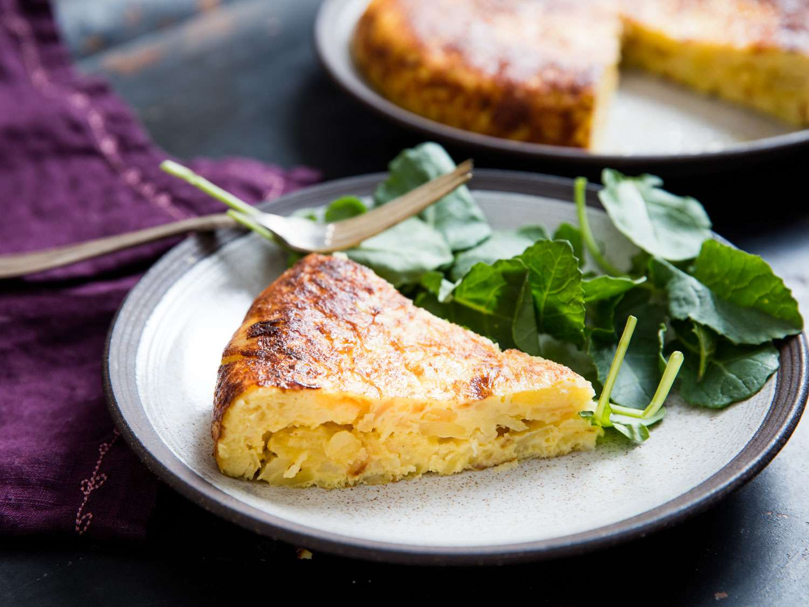

Tortilla Española
A beloved Spanish classic, Tortilla Española (Spanish omelette) is a simple yet satisfying dish made
with eggs, potatoes, and onions. It's perfect for breakfast, lunch, or as a tapa.
Preparation:
15 minutes
Cook:
25–30 minutes
Total:
40–45 minutes
Ingredients:
- 4 medium potatoes (about 1 lb / 450g), peeled and thinly sliced
- 1 medium onion, thinly sliced
- 6 large eggs
- ¾ cup (180ml) olive oil (for frying)
- Salt, to taste
Instructions:
- Heat olive oil in a nonstick or cast iron pan over medium heat.
- Add sliced potatoes and onions, season with salt, and cook gently for about 15–20 minutes, stirring
occasionally, until soft but not browned.
- Drain the potatoes and onions using a slotted spoon and set aside. Reserve some oil for cooking the
tortilla.
- In a large bowl, beat the eggs and add the cooked potatoes and onions. Stir gently to combine. Let
it sit for a few minutes.
- Heat 1–2 tablespoons of the reserved oil in the pan over medium-low heat. Pour in the egg mixture
and spread it evenly.
- Cook for 6–8 minutes until mostly set, gently shaking the pan to prevent sticking. Use a spatula to
loosen the edges.
- Carefully flip the tortilla using a plate: place a plate over the pan, invert the tortilla onto the
plate, then slide it back into the pan to cook the other side for 4–5 minutes.
- Once fully set and lightly golden, transfer to a plate. Let it rest a few minutes before slicing.
- Serve warm, at room temperature, or chilled — great on its own or with a side salad.